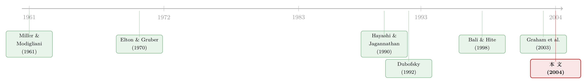

「差一点」的除息日：把 tick 缩到一美分，异象为什么还在？
本文读的是 Jakob & Ma (2004, Journal of Financial Economics)：他们用 $1/8、$1/16 与十进制三套报价最小变动单位 (tick size) 的数据，检验"除息日股价跌得比股利少"这桩老异象，到底是不是纯粹由价格离散 (Bali & Hite, 1998) 或 NYSE Rule 118 (Dubofsky, 1992) 这类微观结构机制造成的。结论很干脆——把 tick 从八分之一美元一路缩到一美分，异象的幅度几乎没有变小。纯离散的解释被直接否定；Rule 118 的方向对了，量却对不上。某种关键的东西，仍然不在这两个模型里。
1 一个「差一点」的谜
故事得从一句教科书式的断言说起。Miller and Modigliani (1961) 说，在一个没有摩擦、没有不确定性的完美资本市场里，一只股票在派完股利之后，价格应当恰好下跌一个股利的金额——你左手少拿了 0.5 美元的现金，右手的股价就该掉 0.5 美元，分文不差。
可惜数据从来不这么听话。几十年来，实证研究反复发现：除息日 (ex-dividend day) 的平均股价跌幅，总是小于股利金额。Elton and Gruber (1970) 那篇被引到烂熟的文章给出过一个数字：股价跌幅与股利之比 (price drop to dividend ratio) 只有 0.778。也就是说，派 1 块钱的息，股价平均只跌 7 毛 8。这多出来的 2 毛 2，几十年来逼着无数经济学家去找一个说得通的解释。
最早、也最有名的解释是税收。Elton 和 Gruber 说，投资者只关心税后收益；如果股利所得税率高于资本利得税率，那么除息日股价"少跌"一点，恰好补偿了持有人在税收上的损失，于是市场里形成了按股息率分层的税收顾客群 (tax clientele)。
但这个解释从一开始就不太牢靠。Kalay (1982) 和 Miller and Scholes (1982) 指出，税收顾客群假说和无套利均衡 (no-arbitrage equilibrium) 是冲突的——如果真有这么大一块免费的午餐，套利者早该把它吃光。更致命的一击来自 Frank and Jagannathan (1998)：他们跑到既不征股利税、也不征资本利得税的香港，发现除息日股价照样跌得比股利少。没有税，异象却还在——那"税收"显然不是全部的答案。
于是，一批人把目光从税收转向了市场微观结构 (market microstructure)。一个自然的问题是：会不会根本不是投资者在算税后收益，而是交易所那套"报价只能落在离散刻度上"的机械规则，把跌幅给"卡"小了？
这正是本文要审判的两个嫌疑人。
2 两个「机械」的嫌疑人
围绕微观结构，有两篇关键论文，给出了两种不同的机械解释。
嫌疑人一号：Bali and Hite (1998)——价格离散。 他们的逻辑很纯粹：价格只能落在 tick 的整数倍上（$1/8 时代，价格只能是 …、12.000、12.125、12.250… 这些刻度）。他们证明，投资者绝不会为一份股利付出超过它本身价值的钱，于是均衡的除息日跌幅，等于把股利向下取整到的那一档 tick。用 $1/8 举例：股利无论是 $0.20 还是 $0.25，跌幅都是 $0.125。如果用 \(\underline{D}\) 表示"股利向下取整的那档 tick"，Bali 和 Hite 的预测就是一句话：
$$\Delta P = \underline{D}$$
嫌疑人二号：Dubofsky (1992)——价格离散 + NYSE Rule 118。 这条规则（以及 AMEX Rule 132）规定：在除息日，交易所会自动把未成交的限价买单 (limit buy orders) 价格下调一个股利金额；如果下调后不落在 tick 刻度上，再继续往下压到下一档 tick。而限价卖单 (limit sell orders) 一律不动。
这条规则的关键，是它的不对称。还是 $1/8、股利 $0.15 的例子：限价买单被下调 $0.15，不在刻度上，于是继续压到 $0.25；限价卖单纹丝不动。结果是，买价（bid）那一侧跌了 $0.25，卖价（ask）那一侧跌了 $0。如果除息日的报价仍然被这些调整后的限价单约束着，那么用 \(\overline{D}\) 表示"大于等于股利的最小那档 tick"，Dubofsky 在两条很强的假设下给出：
$$\Delta P_a = 0, \qquad \Delta P_b = \overline{D}, \qquad \Delta P = \frac{\Delta P_a + \Delta P_b}{2} = \frac{\overline{D}}{2}$$
这两条假设是：(A) 除息日的买卖报价完全被调整后的限价单约束；(B) 成交在买卖两侧各占 50%。\(\Delta P_a\) 是卖价跌幅，\(\Delta P_b\) 是买价跌幅，\(\Delta P\) 是成交价跌幅。
注意两个嫌疑人在"卖价该不该动"上分道扬镳。Bali-Hite 的世界里买卖对称、没有 Rule 118；Dubofsky 的世界里，规则只动买单不动卖单，于是买价的跌幅大、卖价的跌幅小，价差 (bid-ask spread) 在除息日被撑宽。这一条，后面会成为分辨真凶的关键指纹。
Dubofsky 自己也承认，假设 A、B 在多数情况下并不成立——一旦股利变大，没被调整的旧卖单会被新提交的、更优的卖单替换，专家做市商 (specialist) 也会出手干预，把卖价压低或干脆在更优的价位成交。这些都会松动 A、B。但他强调：只要这套机械调整的效果没被完全抵消，方向性的预测（买价跌得多、卖价跌得少、价差变宽）就依然成立。
（关于"价格只能落在离散刻度上、限价单如何约束报价"这套机制，可参见《买卖价差为什么会「自己长回去」？——把限价订单簿当成一座流动性的集市》与《一天只成交几笔，价差还能量准吗？——把「离散」写进 bid-ask spread 的估计》。）
3 一道能分辨真凶的回归
两个嫌疑人的口供，在五个可测维度上系统性地不一样。其中最干净的一道检验，是一个回归。两位作者把除息日跌幅写成：
这里 \(t = 1, 2, \dots, T\) 是样本里的各个除息日，\(i\) 是当天除息的各只股票。
口供对照表是这样的：
- Bali-Hite 说：\(a = c = 0\)，\(b = 1\)。因为跌幅就死死等于 \(\underline{D}\)，与"余数"\(d\) 无关，在两档 tick 之间跌幅是一条平的台阶。
- Dubofsky 说（若假定跌幅服从这个线性形式）：\(b > 0\) 且 \(c > 0\)。因为随着股利变大、新限价单和做市商干预增多，同一档 tick 内部跌幅会随股利上升。
换句话说，两人都预言除息日跌幅对股利画出一条锯齿形 (saw-toothed) 曲线——每越过一个 tick 刻度，跌幅就跳一下；但 Bali-Hite 的锯齿在两齿之间是水平的，Dubofsky 的锯齿在两齿之间是向上爬的。\(c\) 这个系数，就是分辨两者的那把刀。
这里有个微妙的不对称：Eq.(5) 是对 Bali-Hite 的有效检验（他们的模型本身就长这个样子）；但它对 Dubofsky 只在"线性设定正确"这个额外假设下才有效。Dubofsky 本人都劝你别把他的全约束模型当真——一旦不当真，模型就给不出关于跌幅金额的精确预测了。所以本文的策略是：先看 Bali-Hite 能不能被否定，再看 Dubofsky 的定性方向对不对。
为了把回归做对，还有一个容易被忽视的统计坑：股利聚集 (dividend clustering)——很多只不同的股票常在同一天除息，于是同一天里那些 \(e_{t,i}\) 是相关的，普通最小二乘 (OLS) 的标准误会失真。Bali 和 Hite 当年用的就是 OLS。本文改用 Hayashi and Jagannathan (1990) 的面板数据模型，给每个除息日放一个固定效应 (fixed effect)：
$$\Delta P_{t,i} = a + \sum_{t=1}^{T} a_t\,(\text{fixed effect})_t + b\,\underline{D}_{t,i} + c\,d_{t,i} + e_{t,i}$$
这样，某一天某个把所有当天除息股票一起推高的共同冲击，就被那个 \(a_t\) 吸收掉了。用同一套面板框架，他们还检验了"股利减跌幅"这个量：
$$\overline{D}_{t,i} - \Delta P_{t,i} = a + \sum_{t=1}^{T} a_t\,(\text{fixed effect})_t + e_{t,i}$$
于是"除息日跌幅平均小于股利"这句话，就等价于检验 \(a > 0\)——一个干净利落、可以直接检验的假设。
4 数据：把「隔夜」当一台显微镜
样本来自 CRSP 与 NYSE 的 TAQ（成交与报价库），外加 NYSE 公布的十进制转换日期清单。区间是 1993 年 1 月到 2001 年 12 月，只取 NYSE 普通、现金、应税的股利分配，剔除同日多次分配的情形，并要求除息前一日（cum-day）收盘价不低于 $2.00。合并后样本 52,179 笔。
按除息当时的 tick 切成三段：$1/8 有 24,270 笔、$1/16 有 22,512 笔、$0.01 有 5,397 笔。NYSE 在 1997 年 6 月 24 日把 tick 从 $1/8 降到 $1/16，又在 2000 年下半年到 2001 年 1 月 29 日分批降到一美分。
这里有一个方法上的小聪明，值得专门说。过去的研究大多看"收盘到收盘"(close-to-close) 的跌幅，可这玩意儿噪声极大——Eades et al. (1994) 与 Boyd and Jagannathan (1994) 都警告过，靠一两年的收盘价数据做推断会非常不准。本文的办法是同时看"前一日收盘到除息日开盘"(cum-close to ex-open) 的隔夜跌幅：在他们的样本里，隔夜跌幅的标准差只有 $0.399，而收盘到收盘跌幅的标准差是 $0.728。
这意味着什么？\(0.728 / 0.399 \approx 1.82\)。也就是说，就"估计平均跌幅"而言，隔夜样本里的一个观测，顶得上只有收盘价的样本里近两个观测。于是这 5.2 万笔样本，在统计效力上相当于 9.4 万笔收盘到收盘的观测。把隔夜当显微镜，把噪声压下去——这是本文能下狠手做精确推断的底气。
5 真凶现身了吗？
五个发现，逐一来看。我会把"它在打谁的脸"标清楚。
发现一：跌在 \(\underline{D}\) 和跌在 \(\overline{D}\) 的，一样多。 Bali-Hite 预测跌幅等于 \(\underline{D}\) 的案例应当远多于等于 \(\overline{D}\) 的。可在 $1/8 样本里，隔夜跌幅恰好等于 \(\underline{D}\) 的占 30.67%，恰好等于 \(\overline{D}\) 的占 30.85%——几乎一样多。收盘到收盘则是 20.6% 对 20.1%，还是一样多。Bali-Hite 错。Dubofsky 则预言很多跌幅会落在 \(\overline{D}\)（因为买价那侧被压到 \(\overline{D}\)），与数据相容。
发现二：小股利的跌幅，反而比股利还大。 这是最反直觉、也最致命的一击。按 Bali-Hite，小于等于一个 tick 的股利，跌幅应当等于零；任何股利的跌幅都不该超过股利本身。可 $0.05 的股利（不到 $0.125 这档 tick 的一半），平均跌幅竟是 $0.0739——跌得比股利还多，\(\Delta P / \underline{D}\) 这一格高达 1.478。更系统地，他们对所有"小股利"算了"跌幅减股利"的均值：$1/8 时代是 +0.03036（在 1% 水平显著），$1/16 时代是 +0.01942（10% 水平显著），都是显著为正，而且没有一个 tick 区间出现显著为负。这正是 Dubofsky 的预言（对小于半个 tick 的股利，跌幅可以比股利还大），是 Bali-Hite 模型无法容纳的。
发现三：买价跌得多，卖价跌得少。 三个 tick 区间里，"前收盘买价到除息开盘买价"的跌幅都大于股利，而股利又大于"前收盘卖价到除息开盘卖价"的跌幅。这正是 Rule 118 那个不对称指纹——只压买单、不动卖单。Dubofsky 对，Bali-Hite 没有这一项预测。
发现四：除息日开盘价差变宽。 除息日开盘的买卖价差比前一日更大。同样是 Rule 118 不对称调整的直接后果，与 Dubofsky 相容。
发现五——也是全文的题眼：把 tick 缩小，异象几乎没变小。 这是真正关键的一步。Bali-Hite 有一个极强的推论：既然跌幅与股利之差 \((\overline{D} - \underline{D})\) 总小于一个 tick，那么 tick 一旦缩小，异象就该跟着缩小，到了十进制时代异象基本上应该消失。可数据说"不"——把 tick 从 $1/8 一路降到 $0.01，"股利减跌幅"这个量并没有显著下降。异象稳稳地活着。
于是反转出现了：把 tick 缩到一美分，本是给"纯离散"假说量身定做的死刑判决——如果离散是唯一原因，跌幅就该归位到股利。结果异象岿然不动。Bali-Hite 的五项预测，全军覆没。
那 Dubofsky 赢了吗？也没有。如果照字面接受他那个全约束模型（假设 A、B 成立），它会预测除息日卖价跌幅为零（\(\Delta P_a = 0\)）。可数据里卖价的跌幅显著为正，这一条又被否了。而且按 Eq.(4)，缩小 tick 会让 \(\overline{D}/2\) 变小、从而加剧异象——这同样和"异象基本没变"对不上。所以 Dubofsky 只在定性方向上对（不对称、价差变宽、\(c > 0\)），在定量上同样过不了关。
一句话：两个机械嫌疑人，一个被彻底排除，一个只招了一半。除息日的"差一点"，仍有某种东西不在这两套模型里。
值得一提的是，与本文几乎同时，Graham et al. (2003) 也检验了十进制化对除息日异象的影响。他们和本文一样发现异象在十进制后没有消失，但他们把这归因于十进制化前后恰好发生的一次税制变化，反过来给税收解释投了一票。同一组事实，两种叙事——这恰恰说明，"少跌"这件事至今没有一个让所有人信服的单一机制。
（关于个人税率如何真切地定价了股票、以及如何用干净的实验把它分离出来，可参见《个人税，悄悄定价了你的股票——一个来自伦敦 AIM 的干净实验》；关于股利政策本身的潮起潮落，可参见《股利忽隐忽现的四十年，竟都写在一个「溢价」里》。）
6 文献脉络
把这条线索摆开看，它其实是一部"解释同一个 2 毛 2"的接力史。
起点是 Miller and Modigliani (1961) 的完美市场基准：跌幅 = 股利。接着，Elton and Gruber (1970) 用 0.778 这个比值把税收顾客群假说推上舞台。然后是一连串的质疑：Kalay (1982)、Miller and Scholes (1982) 从无套利的角度发难，Frank and Jagannathan (1998) 干脆拿"无税的香港"把税收解释将了一军。与此同时，方法论也在进步——Eades et al. (1994) 和 Boyd and Jagannathan (1994) 反复强调跌幅的"噪声"问题，Hayashi and Jagannathan (1990) 则贡献了处理股利聚集的面板方法。
但真正构成本文对手的，是微观结构这一支：Dubofsky (1992) 提出 Rule 118 解释，Bali and Hite (1998) 提出纯离散解释。本文 (2004) 站在三套 tick 制度交替的历史窗口上，用一个去噪后等效近 9.4 万笔的大样本，对这两个模型做了一次正面的、可证伪的对质。它的位置，是给"微观结构能否独力解释除息日异象"画了一个相当确定的句号：不能。

评论与延伸（Q&A + 研究方向）
(a) 几个可能的疑问
Q：Bali-Hite 和 Dubofsky 的核心区别，能不能用一句话说清？
能。两者都靠"价格离散"，但 Dubofsky 多了一条 NYSE Rule 118——除息日只把限价买单下调、不动限价卖单。这条不对称规则让买价跌得多、卖价跌得少、价差变宽；Bali-Hite 的世界里买卖对称，没有这层机制。检验上，二者在回归 Eq.(5) 的 \(c\) 系数（同档 tick 内跌幅随股利是否上升）以及"缩小 tick 异象是否缩小"上给出相反预言。
Q：为什么"缩小 tick 异象没缩小"对纯离散解释是致命的？
因为离散造成的偏差，上限就是一个 tick 的宽度。Bali-Hite 的逻辑里，跌幅与股利之差永远小于一个 tick，所以 tick 越小、偏差越小，到了一美分量级偏差就该趋于零、异象消失。数据里异象稳稳不动，等于说"偏差并不随 tick 缩小而缩小"——那它就不可能主要由离散造成。
Q：用"隔夜跌幅"代替"收盘到收盘"，会不会引入隔夜信息的新偏误？
这是合理的担忧，但作者的论证是统计效力导向的：隔夜跌幅标准差
$0.399远小于收盘到收盘的$0.728，噪声更小、推断更准。两个模型都假设从除息前到除息日没有信息事件；只要这个假设在两种窗口下同样成立，用噪声更小的隔夜窗口只会让检验更有力，而非更偏。当然，"开盘集合竞价的微观结构是否特殊"仍是一个可以深挖的角落。
Q：Rule 118 的不对称既然方向对了，为什么量上对不上？
因为它的"全约束"假设（A：报价完全被调整后的限价单锁死；B：买卖成交各半）在现实里被持续松动——新的限价卖单、专家做市商的干预，都会把卖价压低、把成交搬离 50/50。这些力量让卖价跌幅显著为正（否定 \(\Delta P_a = 0\)），也让"缩小 tick 加剧异象"的定量预测落空。规则提供了正确的方向，却给不出正确的幅度。
Q：把十进制时代的"有效 tick"设成五美分，是不是 cherry-picking？
作者承认这是一个外加的、两个原模型都没有的假设，理由是数据里约 50% 的成交发生在五美分整数倍上——人们习惯性地按五美分报价。但他们也明确指出，若按真实的一美分名义 tick 来算，定性结论不变。换句话说，这个假设影响的是数字的精修，而非"异象没消失"这个主结论。
Q：那除息日的"少跌"，最后到底该归给谁？
本文的诚实回答是：微观结构（离散 + Rule 118）解释不了全部，某种重要的东西仍然缺席。与此同时 Graham et al. (2003) 把矛头重新指向税收。比较合理的读法是——这是一桩多因叠加的悬案，微观结构机制贡献了方向性的指纹（不对称、价差变宽），但幅度上仍需要税收或其他行为/制度因素来补足。
(b) 几个可能的研究问题与提案
1. 公司债的"除息日"：付息日有没有同样的"少跌"？
【经济故事】公司债 (corporate bond) 也有 ex-coupon 日，但它在 OTC 市场撮合、没有 NYSE Rule 118 那套强制限价单调整、tick 结构也完全不同。如果在债券上仍观察到价格在付息日跌得比应计利息 (accrued interest) 少，那就说明"少跌"未必依赖股票市场那套机制；反之则反证微观结构的作用。【可行性】中。
TRACE有成交价、MarketAxess/交易商报价可近似买卖价差，难点在于把应计利息和真实价格变化干净地分离、以及债券成交稀疏带来的噪声——但本文"用隔夜降噪"的思路可以平移成"用成交密集的活跃券降噪"。
2. 外资持有人与税收顾客群：跨境税率差异下的除息日行为。
【经济故事】不同国别的投资者面对的股利/资本利得税率不同，理论上会形成跨境的税收顾客群。若一只股票的外资持股比例上升、而外资适用的股利税更高（或更低），除息日跌幅是否随之系统性移动？这能把"税收 vs 微观结构"之争放到一个有外生变异的场景里。【可行性】中。需要持股人国别构成（如 13F 难覆盖外资，得靠各国托管/央行数据或 ADR）、以及一次税率改革或可投资度 (investability) 变化作为冲击；识别上偏好用税改的 DiD。
3. 十进制化作为流动性异象的自然实验：把样本扩到价差与深度。
【经济故事】本文已证明 tick 缩小没杀死除息日异象，但它主要看跌幅。一个自然延伸是：在同一次十进制化冲击下，除息日的价差变宽幅度和深度变化是否随 tick 缩小而系统改变？这能更细地刻画 Rule 118 的约束力到底有多强。【可行性】高。
TAQ的报价与深度数据齐全，事件日清晰，断点 (tick 转换日) 干净，是一个现成的回归断点/DiD 设计。
4. 直接检验 Rule 118：限价订单簿层面的"被调整订单是否真在约束报价"。
【经济故事】Dubofsky 的全部张力，都压在"除息日报价是否被调整后的限价单锁死"这条假设上。今天有逐笔消息级 (message-level) 的限价订单簿数据，完全可以直接观察：除息日开盘时，被交易所机械下调的买单，是否真的就是当时的最优买价？被新单替换的比例有多高？这相当于把假设 A 从"信不信"变成"测得到"。【可行性】高（对有
ITCH/NASDAQ消息数据者），主要成本是数据获取与重建订单簿的工程量。
参考文献
- Bali, R., Hite, G. (1998). Ex-dividend day stock price behavior: discreteness or tax-induced clienteles? Journal of Financial Economics 47, 127–159.
- Boyd, J., Jagannathan, R. (1994). Ex-dividend day price behavior of common stocks. Review of Financial Studies 7, 711–741.
- Dubofsky, D. (1992). A market microstructure explanation of ex-day abnormal returns. Financial Management 21, 32–43.
- Eades, K., Hess, P., Kim, E. (1994). Time-series variation in dividend pricing. Journal of Finance 49, 1617–1638.
- Elton, E., Gruber, M. (1970). Marginal stockholder tax rates and the clientele effect. Review of Economics and Statistics 52, 68–74.
- Frank, M., Jagannathan, R. (1998). Why do stock prices drop by less than the value of the dividend? Evidence from a country without taxes. Journal of Financial Economics 47, 161–188.
- Graham, J., Michaely, R., Roberts, M. (2003). Do price discreteness and transactions costs affect stock returns? Comparing ex-dividend pricing before and after decimalization. Journal of Finance, forthcoming.
- Hayashi, F., Jagannathan, R. (1990). Ex-day behavior of Japanese stock prices: new insights from new methodology. Journal of the Japanese and International Economy 4, 401–427.
- Kalay, A. (1982). The ex-dividend day behavior of stock prices: a reexamination of the clientele effect. Journal of Finance 37, 1059–1070.
- Miller, M., Modigliani, F. (1961). Dividend policy, growth, and the valuation of shares. Journal of Business 34, 411–433.
- Miller, M., Scholes, M. (1982). Dividends and taxes: empirical evidence. Journal of Political Economy 90, 1118–1141.